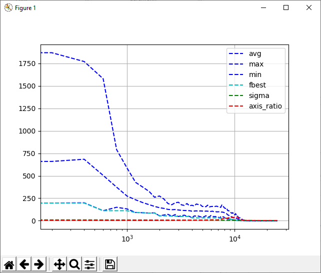
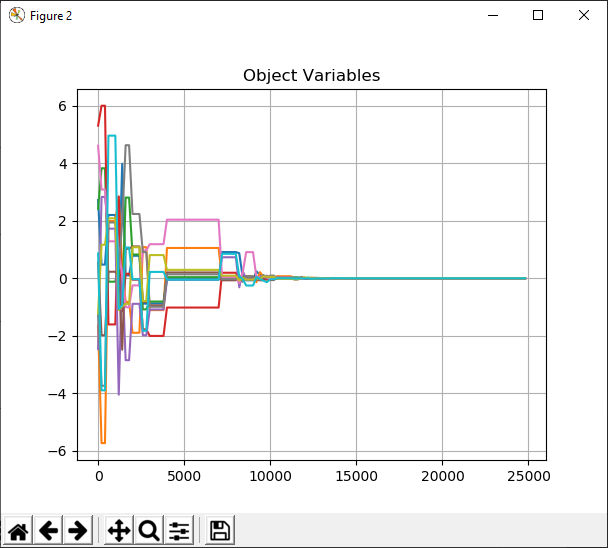
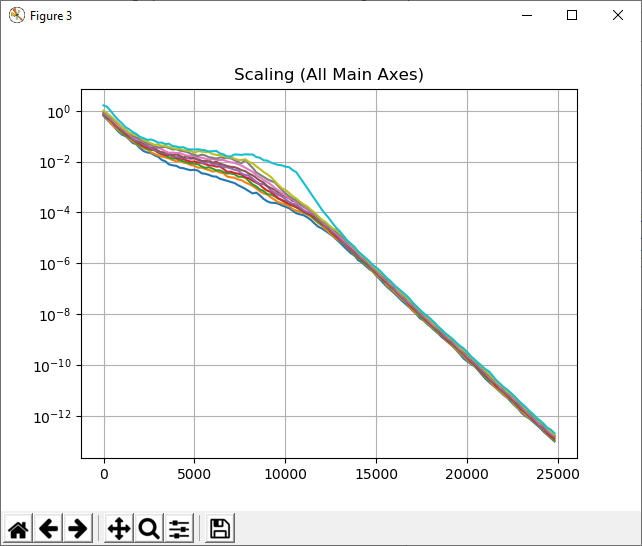
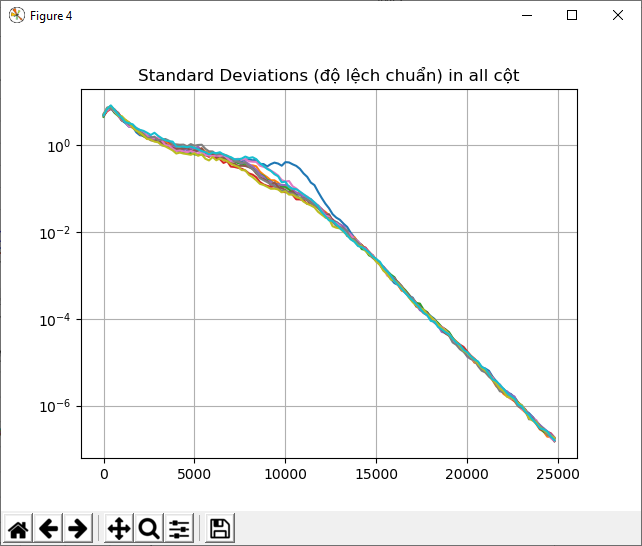
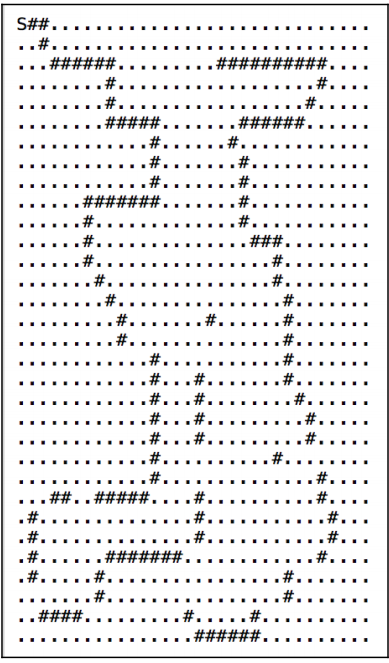

8
Thuật toán di truyền
(Genetic Alogrithms)
Trong chương này chúng ta sẽ học về thuật toán di truyền. Chúng ta sẽ thảo luận về khái niệm của thuật toán tiến hóa và lập trình di truyên, và xem làm thế nào mà chúng được gọi là thuật toán di truyền. Chúng ta sẽ học về các khối xây dựng cơ bản lên thuật toán di truyền như: di truyền chéo(crossover), đột biến(mutation) và hàm thích nghi (fitness functions). Chúng ta sẽ sử dụng những khái niệm đó để xây dựng những hệ thống khác nhau.
Kết quả sẽ thu được khi bạn hoàn thành chương này:
Thuật toán di truyền và tiến hóa là gì ?
Thuật toán di truyền là một dạng của thuật toán tiến hóa. Vì thế để hiểu thuật toán di truyền là gì chúng ta cần phải thảo luận về thuật toán tiến hóa. Một thuật toán tiến hóa là một thuật toán khám phá tối ưu(heuristic optimization – đã nói ở chap trước) được áp dụng vào nguyên tắc tiến hóa để giải quyết vấn đề. Khái niệm về tiến hóa thì cũng như là những gì mendel nói có thể tìm hiểu thêm ở wiki. Chúng ta thường sử dụng trực tiếp các hàm và biến để giải quyết vấn đề và đưa ra giải pháp. Nhưng ở thuật toán di truyền, bất cứ vấn đề nào được đưa ra đều được mã hóa thành các bit( mã nhị phân 010) và được thao tác bởi thuật toán. Trong thuật toán di truyền để tối ưu cho một bài toán, ý tưởng (idea) là một tập hợp (gọi là nhiễm sắc thể ) của những giải pháp (solution) có thể ( gọi là cá thể) sẽ được cho tiến hóa theo hướng chọn lọc những giải pháp tốt hơn. Những giải pháp này được thể hiện dưới dạng nhị phân (0,1) và mang nhiều thông tin mã hóa khác nhau. Quá trình tiến hóa xảy ra từ một tập hợp những cá thể hoàn toàn ngẫu nhiên ở tất cả các thế hệ.
Ý tưởng cơ bản trong tất cả các giải thuật tiến hóa là chúng ta sẽ lấy một tập hợp và áp dụng quy trình chọn lọc tự nhiên. Chúng ta bắt đầu bằng một bộ các cá thể (individual) và sau đó nhận dạng thằng nào khỏe nhất trong số đó. Sức khỏe của mỗi cá thể được xác định bằng cách sử dụng hàm thích nghi (fitness function). Bằng cách này chúng ta sử dụng phương pháp sống sót mạnh nhất (survival of the fittest).
Sau đó chúng ta lấy những cá thể được chọn đó và tạo ra thế hệ tiếp theo bằng phương pháp tổ hợp và đột biến. Chúng ta sẽ thảo luận khái niệm của tổ hợp và đột biến ở phần tiếp thiếp. Bây giờ chúng ta sẽ xem giải thuật như là cơ chế để tạo ra các thế hệ tiếp theo bằng cách coi các cá thể được chọn là bố mẹ.
Khi chúng ta thực hiện tổng hợp và đột biến, chúng ta đã tạo ra một nhóm cá thể mới sẽ thay thế các nhóm cá thể cũ ở thế hệ tiếp theo. Bằng cách loại bỏ những cá thể yếu và thay thế chúng bằng các thế hệ con, cháu, chúng ta đã tăng mức độ thích nghi chung của cả tập hợp. Chúng ta tiếp tục lặp lại việc này cho tới khi mức độ thích hợp nhất được đạt đến.
Một thuật toán di truyền là một thuật toán tiến hóa khi chúng ta sử dụng heuristic ( tìm kiếm khám phá) để tìm một chuỗi các bits( mã nhị phân mã hóa) để giải quyết một vấn đề. Chúng ta lặp đi lặp lại trên một tập hợp các cá thể để đưa ra một giải pháp. Chúng ta làm điều đó bằng cách tạo ra những tập hợp cá thể mới mạnh mẽ hơn. Chúng ta áp dụng các phép toán xác suất như lựa chọn (selection), trao đổi chéo (corossover) và đột biến trong vào việc tạo ra các thế hệ (generation) cho các cá thể. Những cá thể này về bản chất là các chuỗi, và các chuỗi này là các phiên bản mã hóa tiềm năng của một giải pháp.
Hàm thích nghi (fitness function) được sử dụng để đo lường mức độ thích nghi của mỗi chuỗi nói cho chúng ta biết mức độ giải quyết vấn đề của mỗi cá thể. Hàm thích nghi này cũng được coi là một hàm tiến hóa. Thuật toán di truyền áp dụng các phép toán được lấy cảm hứng từ tự nhiên, đó là lý do vì sao các thuật ngữ nghe giống với thuật ngữ sinh học.
Các khái niệm cơ bản trong thuật toán di truyền
Để xây dựng một thuật toán di truyền, chúng ta cần hiểu vài khái niệm chính và một số thuật ngữ. Những khái niệm được sử dụng thường xuyên trong lĩnh vực thuật toán di truyền để xây dựng giải phải cho những vấn đề khác nhau. Một trong những khía cạnh quan trọng của thuật toán di truyền là ngẫu nhiên. Để lặp nại nó dựa vào việc lấy mẫu ngẫu nhiên các cá thể. Có nghĩa là việc xử lý không xác định. Vì vậy nếu bạn chạy cùng một thuật toán nhiều lần bạn có thể có những kết quả khác nhau.
Hãy nói về quần thể (population). Một quần thể có nghĩa là một tập hợp của các cá thể - những giải pháp (solutions). Trong thuật toán di tryền, chúng ta không xác định một giải pháp tốt nhất cho một vấn đề. Nó là một tập hợp các giải pháp, một trong cái đó là giải pháp mong muốn. Nhưng những giải pháp khác cũng đóng vai trò quan trọng trong quá trình tìm kiếm. Vì chúng ta có một tập hợp các giải pháp, nên chúng ta ít bị chặn ở đường cụt trong việc tối ưu hóa. Bị chặn trong tối ưu local là một vấn đế cổ điển phải đối mặt với các kỹ thuật tối ưu hóa khác.
Bây giờ chúng ta đã biết về quần thể và bản chất của thuật toán di truyền. Giờ hãy nói về các phép toán. Khi chúng ta tạo ra các thế hệ của các cá thể, chúng ta cần phải đảm bảo chúng là những cá thể mạnh nhất trong thế hệ hiện tại. Đột biến (mutation) là một cách làm. Một thuật toán di truyền làm thay đổi ngẫu nhiên tới một hoặc vài cá thể trong thế hệ hiện tại để mang lại một cá thể mới trong đó có một hoặc một vài tính năng của các cá thể bố mẹ thì thay đổi này được gọi là đột biến. Bây giờ thay đổi này có thể làm cho cá thể đó tốt hơn hoặc xấu hơn trạng thái bố mẹ của cá thể đó do đó không ai đánh giá được phương pháp đột biến nào là tốt nhất
Khái niệm tiếp theo là khái niệm tổ hợp, nó cũng được gọi là trao đổi chéo. Đây là vai trò của sinh sản trong quá trình tiến hóa. Một thuật toán di truyền có gắng kết hợp các cá thể từ thế hệ hiện tại để tạo ra thế hệ mới. Nó kết hợ một vài tính năng của mỗi cá thể bố mẹ để tạo ra các thế hệ con cháu của nó. Đây được gọi là trao đổi chéo, mục đích của việc này là thay đổi những cá thể yếu trong thế hệ hiện tại bằng thế hệ con chau với những cá thể mạnh mẽ hơn.
Để áp dụng trao đổi chéo và đột biến, chúng ta cần phải có tiêu chí lựa chọn. Khái niệm của lựa chọn ở đây được lấy từ lý thuyết chọn lọc tự nhiên. Trong mỗi quá trình lặp, thuật toán di truyền sẽ đưa ra một xử lý lựa chọn. Cá thể mạnh nhất được chọn sử dụng phép chọn lọc (selection) và cá thể yếu hơn sẽ bị loại bỏ. Đây là lúc mà phương pháp "kẻ sống sót cuối cùng" được đưa vào sàn đấu. Quá trình lựa chọn này được thực hiện bằng các sử dụng một hàm thích nghi đẻ tính mức độ mạnh yếu của mỗi cá thể.
Tạo một bit mẫu cùng với tham số cho trước
Giờ chúng ta học về thuật toán di truyền hoạt động thế nào, làm thế nào mà nó có thể giải quyết được một vài vấn đề. Chúng ta sẽ sử dụng một package có tên là DEAP. Bạn có thể tìm hiểu chi tiết về nó tại đây: https://deap.readthedocs.io/en/master/ về cơ bản thì nó là một framework tính toán quá trình tiến hóa để tạo mẫu và thử nghiệm các ý tưởng. Cài package bằng pip install hoặc install package trong pycharm:
Trong phần này chúng ta sẽ giải quyết mọt biến thể của bài toán One Max Problem. Bài toán One Max Problem là một bài toán về việc tạo rã một chuỗi bit trong đó chứa số lượng số 1 nhiều nhát. Nó là vấn đề cơ bản nhưng rất hữu dụng trong việc làm quen với thư viện DEAP và hiểu về cách thực hiện các giải giải pháp sử dụng thuật toán di truyền. Trong trường hợp của chúng ta chúng ta sẽ tạo ra một chuỗi bit chứa số lượng các số 1 được xác định trước. Bạn sẽ thấy cấu trúc code ở bên dưới và một phần của nó giống với ví dụ của thư viện DEAP.
import random
from deap import base,creator,tools
# Giờ chúng ta muốn tạo một chuỗi bít với độ dài là 75 và chúng ta muốn nó chứa 45 số 1.
#Chúng ta cần tạo một hàm đánh giá (evaluation function) để có thể sử dụng như là mục tiêu cần đạt :
def eval_func(individual):
target_sum=45
return len(individual)-abs(sum(individual)-target_sum),
# Nếu bạn nhìn vào công thức được sử dụng ở hàm trên bạn có thể thấy nó sẽ đạt giá trị lớn nhất khi số lượng số 1 bằng 45. độ dài các cá thể là 75. Khi những số 1 của nó bằng 45 thì giá trị trả về phải là 75
#Giờ chúng ta tạo một hàm để tạo toolbox. Hãy tạo một object creator để làm hàm thích nghi và theo dõi các cá thể. Class Fitness được dùng ở đây là một abtract class và no dung tham số weights.
# Chúng ta sẽ xây dựng một thích nghi tối đa sử dụng số weights dương:
def create_toolbox(num_bits):
creator.create("FitnessMax",base.Fitness,weights=(1.0,))
creator.create("Individual",list,fitness=creator.FitnessMax)
# Dòng đầu tiên tạo ra một object thích nghi tối đa và đặt tên nó là FitnessMax. Dòng thứ 2 tạo ra cá thể. Trong phần sử lý này thì cá thể đầu tiên được tạo ra là một list các số float
# Để sản xuất ra cá thể này, chúng ta phải tạo một Individual class sử dụng creator. Tham số fitnesss sử dụng object FitnessMax đã tạo ra trước đó.
#Một toolbox là một object thường dùng trong DEAP. Nó dùng để chứa các hàm cùng với các tham số.
toolbox=base.Toolbox()
# Chúng ta bắt đầu đăng ký các hàm khác nhau vào trong object toolbox này. Bắt đầu với việc tạo ra các số nguyên ngẫu nhiên 0 và 1. Đây là cách cơ bản để tạo ra chuỗi bit
toolbox.register("attr_tool",random.randint,0,1)
# Giờ thì đăng ký hàm individual. Method initRepeat gồm có 3 tham số.
# * container class cho các individual (cá thể)
# * hàm dùng để fill cái container trên
# * Thời dian chúng ta muốn lặp cái hàm này lại
toolbox.register("individual",tools.initRepeat,creator.Individual,toolbox.attr_tool,num_bits)
# Chúng ta cần tạo một hàm quần thể (population). Chúng ta muốn quần thể này là một list gồm các cá thể (individual)
toolbox.register("population",tools.initRepeat,list,toolbox.individual)
# Giờ chúng ta tạo ra các phép toán. Đăng ký các hàm đánh giá mà chúng ta đã tạo ra ở bên trên, nó sẽ thực hiện như một hàm thích nghi. Chúng ta muốn các cá thể là một chuỗi bit có 45 số 1
toolbox.register("evaluate",eval_func)
# Tạo phép toán trao đỏi chéo và đặt tên nó là mate sử dụng Method cxTwoPoint của tools
toolbox.register("mate",tools.cxTwoPoint)
# Tạo phép toán đột biến đặt tên nó là mutate sử dụng method mutFlipBit. chúng ta cần chỉ định xác suất đột biến cho từng thuộc tính bằng tham trị indpb
toolbox.register("mutate",tools.mutFlipBit,indpb=0.05)
# Tạo một hàm sử dụng method selTournament. Nó sẽ chỉ định cá thể nào sẽ được chọn để "chăn" tiếp ( phép chọn - selection)
# * tournsize: số các cá thể sẽ tham gia mỗi Tournament ( trận đấu giữa các cá thể ) who is the survival
toolbox.register("select",tools.selTournament,tournsize=3)
return toolbox
# Đây là việc cơ bản để thực hiện tất cả các khái niệm chúng ta đã thảo luận ở phần trước. Một hàm tạo toolbox rất phổ biến trong DEAP và chúng ta sẽ sử dụng nó trong suốt chương 8 này.
# Vì vậy sẽ rất quan trọng để dành một chút thời gian để hiểu cách chúng ta tạo ra cái toolbox này thế nào
# Tạo hàm main và tạo độ dài chuỗi bit:
if __name__=="__main__":
num_bits=75
#Tạo toolbox với numbits
toolbox=create_toolbox(num_bits)
# đặt số ngẫu nhiên cho random = 7
random.seed(7)
#Tạo một quần thể 500 thanh niên (individual)
population=toolbox.population(n=500)
# Tạo số xác suất cho biến dổi chéo (crossover) và đột biến (mutate). Bạn có thể thay đổi các số này để xem nó ảnh hưởng thế nào đến kết quả:
probabilities_cross,prob_mutate=0.5,0.2
# Tạo số lượng thế hệ mà chúng ta cần lặp cho đến khi quá trình xử lý dừng. Nếu tăng số thế hệ được tạo bạn sẽ đưa cho thuật toán tăng thêm sức mạnh cho quần thể
num_generations=60
# Đánh giá tất cả các cá thể trong quần thể sử dụng hàm đánh giá
print("Bắt đầu quá trình tiến hóa")
#Đánh giá cá thể
fitnesses=list(map(toolbox.evaluate,population))
for ind,fit in zip(population,fitnesses):
ind.fitness.values=fit
# Bắt đầu vòng lặp các thế hệ
print('\n Đánh giá xong:',len(population),'cá thể')
for g in range(num_generations):
print("\n==== Thế hệ",g)
offspring=toolbox.select(population,len(population))
# Sao chép các cá thể được chọn
offspring=list(map(toolbox.clone,offspring))
# Áp dụng trao đổi chéo và đột biến và thế hệ tiếp theo của các cá thể sử dụng số xác suất tro trước. Sau mỗi lần chúng ta cần reset lại số thích nghi (fitness)
for child1,child2 in zip(offspring[::2],offspring[1::2]):
if random.random()<probabilities_cross:
toolbox.mate(child1,child2)
# xóa số thích nghi của child
del child1.fitness.values
del child2.fitness.values
for mutant in offspring:
if random.random()<prob_mutate:
toolbox.mutate(mutant)
del mutant.fitness.values
# Đánh giá cá nhân cần phải loại bỏ
invalid_individuals=[ind for ind in offspring if not ind.fitness.valid]
fitness=map(toolbox.evaluate,invalid_individuals)
for ind,fit in zip(invalid_individuals,fitness):
ind.fitness.values=fit
print("Đánh giá :", len(invalid_individuals),"cá thể")
# Thay đổi quần thể bằng thế hệ mới của các cá thể
population[:]=offspring
# In trạng thái của thế hệ hiện tại để xem quá trình xử lý:
fits=[ind.fitness.values[0] for ind in population]
length=len(population)
mean=sum(fits)/length
sum2=sum(x*x for x in fits)
std=abs(sum2/length-mean**2)**0.5
print('Min =',min(fits),', Max =',max(fits))
print('Average =',round(mean,2),', Standard devitation =',round(std,2))
print("\n===== Kết thúc quá trình tiến hóa")
best_individual=tools.selBest(population,1)[0]
print("Thanh niên khỏe nhất:\n",best_individual)
print("Tổng số 1 trong the choosen one: ",sum(best_individual))
Kết quả tại output:
Bắt đầu quá trình tiến hóa
Đánh giá xong: 500 cá thể
==== Thế hệ 0
Đánh giá : 297 cá thể
Min = 58.0 , Max = 75.0
Average = 70.43 , Standard devitation = 2.91
==== Thế hệ 1
Đánh giá : 303 cá thể
Min = 63.0 , Max = 75.0
Average = 72.44 , Standard devitation = 2.16
==== Thế hệ 2
Đánh giá : 310 cá thể
Min = 65.0 , Max = 75.0
Average = 73.31 , Standard devitation = 1.6
==== Thế hệ 3
Đánh giá : 273 cá thể
Min = 67.0 , Max = 75.0
Average = 73.76 , Standard devitation = 1.41
……………………………………..
==== Thế hệ 56
Đánh giá : 306 cá thể
Min = 68.0 , Max = 75.0
Average = 73.96 , Standard devitation = 1.32
==== Thế hệ 57
Đánh giá : 306 cá thể
Min = 68.0 , Max = 75.0
Average = 74.02 , Standard devitation = 1.27
==== Thế hệ 58
Đánh giá : 276 cá thể
Min = 69.0 , Max = 75.0
Average = 74.15 , Standard devitation = 1.18
==== Thế hệ 59
Đánh giá : 288 cá thể
Min = 69.0 , Max = 75.0
Average = 74.12 , Standard devitation = 1.24
===== Kết thúc quá trình tiến hóa
Thanh niên khỏe nhất:
[1, 1, 0, 1, 1, 0, 1, 0, 1, 0, 0, 1, 0, 1, 0, 1, 1, 1, 1, 0, 1, 0, 0, 1, 1, 1, 0, 1, 1, 1, 1, 1, 1, 1, 1, 1, 1, 1, 0, 0, 1, 0, 0, 1, 1, 0, 0, 1, 1, 0, 1, 1, 0, 0, 0, 1, 0, 0, 1, 1, 1, 0, 1, 1, 1, 0, 1, 1, 0, 0, 1, 0, 0, 0, 1]
Tổng số 1 trong the choosen one: 45
Như bạn nhìn thấy ở những gì được in ra tại Terminal. Quá trình tiến hóa kết thúc sau 60 thế hệ. Sau mỗi lần thực hiện các cá thể được chọn và in kết quả. và kết quả cuối cùng là cái chúng ta mong muốn.
Hình dung sự tiến hóa (vẽ đồ thị)
Giờ thì chúng ta xem có thể biểu diễn quá trình tiến hóa thế nào. Trong DEAP, họ sự dụng một hàm có tên là Covariance Matrix Adaptation Strategy(CMS-ES) để vẽ biểu đồ tiến hóa. Nó là một thuật toán tiến hóa được sử dụng giải quyết vấn đề không tuyến tính trong nhiều lĩnh vực. Giải thuật CMA-E5 mạnh mẽ, nghiên cứu tốt, và được xem như là một môn nghệ thuật trong các thuật toán tiến hóa. Hãy xem nó làm việc thế nào bằng cách xem các ví dụ trong thư viện DEAP.
import numpy as np
import matplotlib.pyplot as plt
from deap import algorithms,base,benchmarks,cma,creator,tools
# Tạo toolbox
def create_toolbox(strategy):
creator.create("FitnessMin",base.Fitness,weights=(-1,))
creator.create("Individual",list,fitness=creator.FitnessMin)
toolbox=base.Toolbox()
toolbox.register("evaluate",benchmarks.rastrigin)
np.random.seed(7)
# Tạo method generate và update. Điều này có liên quan đến bản cập nhật mô hình nơi chúng ta sẽ tạo một quần thể từ một strategy và stategy này cập nhật dựa trên quần thể
toolbox.register("generate",strategy.generate,creator.Individual)
toolbox.register("update",strategy.update)
return toolbox
#Tạo hàm main.
if __name__=="__main__":
#Tạo số cá thể và số lần tiến hóa (thế hệ)
num_individuals=10
num_generations=125
#Chúng ta cần định nghĩa hàm strategy trước khi chúng ta bắt đầu
strategy=cma.Strategy(centroid=[5.0]*num_individuals,sigma=5.0,lambda_=20*num_individuals)
toolbox=create_toolbox(strategy)
# Tạo một object HallOfFame. object này chứa những cá nhân tốt nhất được chọn trong quần thể. object này được giữ ở một định dạng được sắp xếp suốt quá trình.
# Bằng cách này thành phần đầu tiên trong object HallOfFame là cá thể có giá trị thích nghi (fitness) tốt nhất trong quá trình tiến hóa
hall_of_fame=tools.HallOfFame(1)
# Tạo các số liệu thống kê sử dụng hàm Statistics trong tools
stats=tools.Statistics(lambda x:x.fitness.values)
stats.register("avg",np.mean)
stats.register("std",np.std)
stats.register("min",np.min)
stats.register("max",np.max)
# tạo object logbook để theo dõi quá trình tiến hóa. Nó về cơ bản là một list của dictionaries:
logbook=tools.Logbook()
logbook.header="gen","eval","std","min","avg","mã"
# Tạo object để kết hợp tất cả các dữ liệu:
sigma=np.ndarray((num_generations,1))
axis_ratio=np.ndarray((num_generations,1))
diagD=np.ndarray((num_generations,num_individuals))
fbest=np.ndarray((num_generations,1))
best=np.ndarray((num_generations,num_individuals))
std=np.ndarray((num_generations,num_individuals))
# lặp để tạo quá trình tiến hóa
for gen in range(num_generations):
population=toolbox.generate()
# Tìm cá nhân thích hợp sử dụng hàm thích nghi:
fitnesses=toolbox.map(toolbox.evaluate,population)
for ind,fit in zip(population,fitnesses):
ind.fitness.values=fit
# Cập nhật stategy dựa trên quần thể
toolbox.update(population)
# Cập nhật hallofFame và số liệu sử dụng thế hệ hiện tại của các cá thể:
hall_of_fame.update(population)
record=stats.compile(population)
logbook.record(evals=len(population),gen=gen,**record)
print(logbook.stream)
# Save dữ liệu để vẽ biểu đồ
sigma[gen]=strategy.sigma
axis_ratio[gen]=max(strategy.diagD)**2/min(strategy.diagD)**2
diagD[gen,:num_individuals]=strategy.diagD**2
fbest[gen]=hall_of_fame[0].fitness.values
best[gen,:num_individuals]=hall_of_fame[0]
std[gen,:num_individuals]=np.std(population,axis=0)
# Đinh nghĩa trục x để vẽ số liệu thống kê
x=list(range(0,strategy.lambda_*num_generations,strategy.lambda_))
avg,max_,min_=logbook.select("avg","max","min")
plt.figure()
plt.semilogx(x,avg,"--b",label="avg")
plt.semilogx(x, max_, "--b",label="max")
plt.semilogx(x, min_, "--b",label="min")
plt.semilogx(x, fbest, "--c",label="fbest")
plt.semilogx(x, sigma, "--g",label="sigma")
plt.semilogx(x, axis_ratio, "--r",label="axis_ratio")
plt.grid(True)
plt.legend()
plt.figure()
plt.plot(x,best)
plt.grid(True)
plt.title("Object Variables")
plt.figure()
plt.semilogy(x,diagD)
plt.grid(True)
plt.title("Scaling (All Main Axes)")
plt.figure()
plt.semilogy(x,std)
plt.grid(True)
plt.title("Standard Deviations (độ lệch chuẩn) in all cột")
plt.show()
Kết quả thu được
hình ảnh được vẽ trên matplot:


Kết quả thu được tại terminal
gen eval std min avg mã
0 188.36 217.082 576.281
1 250.543 196.583 659.389
2 273.081 199.455 683.641
3 215.326 111.298 503.933
4 133.046 149.47 373.124
5 75.4405 131.117 274.092
6 61.2622 91.7121 232.624
7 49.8303 88.8185 201.117
8 39.9533 85.0531 178.645
9 31.3781 87.4824 159.211
10 31.3488 54.0743 144.561
11 30.8796 63.6032 136.791
12 24.1975 70.4913 125.691
13 21.2274 50.6409 122.293
14 25.4931 67.9873 124.132
15 26.9804 46.3411 119.295
16 24.8993 56.0033 115.614
17 21.9789 61.4999 113.417
18 21.2823 50.2455 112.419
19 22.5016 48.153 111.543
20 21.1602 32.1864 106.044
21 23.3864 52.8601 107.301
22 23.1008 51.1226 109.628
………………………………….
…………….
………..
113 1.96222e-09 6.24141e-10 4.12443e-09
114 1.15578e-09 4.03659e-10 2.45078e-09
115 8.63667e-10 1.62174e-10 1.80088e-09
116 5.00297e-10 3.11019e-10 1.19956e-09
117 3.43539e-10 1.41625e-10 6.81353e-10
118 2.22699e-10 1.47097e-10 5.08937e-10
119 1.62103e-10 6.08082e-11 3.51655e-10
120 9.20862e-11 4.12967e-11 2.05411e-10
121 6.52617e-11 4.28884e-11 1.57709e-10
122 4.71043e-11 2.37179e-11 1.0917e-10
123 3.70369e-11 2.05773e-11 8.07213e-11
124 2.71108e-11 1.01608e-11 5.75073e-11
Giải quyết vấn đề hồi quy ký hiệu
( symbol regression – kiểu như giải phương trình :D)
Hãy xem lập trình di truyền giải quyết vấn đề hồi quy ký hiệu thế nào. Nó rất quan trọng để hiểu rằng lập trình di truyền không giống như là thuật toán di truyền. Lập trình di truyền là một dạng của lập trình tiến hóa trong đó các giải pháp xuất hiện trong từng phần của một trương trình máy tính. Về cơ bản các cá thể trong mỗi quần thể là một trương trình máy tính và chúng thích nghi với từng mức dộ tương ứng đối với khả năng giải quyết vấn đề của chúng. Những chương trình này được thay đổi tại mỗi lần lặp sử dụng thuật toán di truyền. Về bản chấn lập trình di truyền là một ứng dụng của thuật toán di truyền.
Trở lại bài toán giải quyết vấn đề hồi quy ký hiệu, chúng ta có một biểu thứ đa thức cần được giải ở đây. Đây là một vấn đề hồi quy cổ điển, chúng ta cần ước tính những hàm cơ bản. Trong ví dụ này chúng ta sẽ xử dụng phương trình bậc 3 sau :
Code chúng ta sẽ làm dưới đây là một biến thể của symbol regression được đưa ra trong thư viện DEAP:
import operator
import math
import random
import numpy as np
from deap import algorithms,base,creator,tools,gp
#Tạo toolBox
# Để tạo toolbox ở đây chúng ta cần tạo một bộ sơ khai (primitives)
# Bộ sơ khai này là những phép toán cơ bản sẽ dược sử dụng trong suốt quá trình phát triển.
# Chúng phục vụ việc xây dựng các khối cho các cá thể.
# Chúng ta sẽ sử dụng các hàm số học cơ bản cho bộ sơ khai này
def create_toolbox():
pset=gp.PrimitiveSet("MAIN",1)
pset.addPrimitive(operator.add,2)
pset.addPrimitive(operator.sub,2)
pset.addPrimitive(operator.mul,2)
pset.addPrimitive(division_operator,2)
pset.addPrimitive(operator.neg,1)
pset.addPrimitive(math.cos,1)
pset.addPrimitive(math.sin,1)
# Giờ chúng ta cần tạo hằng số phù du ( ephemeral constant).
# Nó là một giá trị đầu cuối đặc biệt không có giá trị đặc biệt. Khi một trương trình nối thêm hằng số phù du như vậy vào cây(tree), thì hàm đó sẽ được thực thi. Kết quả được thêm vào caay như là một số không đổi.
# Những số không đổi này có thể lấy giá trị là -1,0,1
pset.addEphemeralConstant("rand1",lambda :random.randint(-1,1))
#Tên mặc định của đối số là ARGx. Giờ thì đổi tên nó thành x. Không cần thiết phải làm điều này nhưng lại hưu dụng để quản lý:
pset.renameArguments(ARG0='x')
#chúng ta cần 2 dạng object là fitness(thích nghi) và cá thể (individual). giờ thì sử dụng creator để tạo
creator.create("FitnessMin",base.Fitness,weights=(-1.0,))
creator.create("Individual",gp.PrimitiveTree,fitness=creator.FitnessMin)
# Tạo toolbox và các hàm cần đăng ký để sử dụng. Quá trình đăng ký giống ở phần trước
tool_box=base.Toolbox()
tool_box.register("expr", gp.genHalfAndHalf, pset=pset, min_=1, max_=2)
tool_box.register("individual", tools.initIterate, creator.Individual, tool_box.expr)
tool_box.register("population", tools.initRepeat, list, tool_box.individual)
tool_box.register("compile",gp.compile,pset=pset)
tool_box.register("evaluate",eval_func,points=[x/10. for x in range(-10,10)])
tool_box.register("select",tools.selTournament,tournsize=3)
tool_box.register("mate",gp.cxOnePoint)
tool_box.register("expr_mut",gp.genFull,min_=0,max_=2)
tool_box.register("mutate",gp.mutUniform,expr=tool_box.expr_mut,pset=pset)
tool_box.decorate("mate",gp.staticLimit(key=operator.attrgetter("height"),max_value=17))
tool_box.decorate("mutate", gp.staticLimit(key=operator.attrgetter("height"), max_value=17))
return tool_box
#Tạo một hàm phép chia để quản lý vấn đề gặp lỗi khi chia cho 0
#numerator : tử số, denominator mẫu ssoos)
def division_operator(numerator,denominator):
if denominator==0:return 1
return numerator/denominator
#Tạo hàm đánh giá sẽ được sử dụng để tính toán. Chúng ta cần tạo một hàm có thể gọi để tính toán cá thể được input
def eval_func(individual,points):
# Chuyển đổi từ cây biểu thành hàm
func=tool_box.compile(expr=individual)
# Tính số mean squared error(mse) giữa các hàm đã định nghĩa phía trên và biểu thức gốc
mse=((func(x)-(2*x**3-3*x**2-4*x+1))**2 for x in points)
return math.fsum(mse)/len(points),
#Tạo hàm main
if __name__=="__main__":
random.seed(7)
tool_box=create_toolbox()
#Tạo quần thể sử dụng hàm sẵn có trong toolbox chúng ta đã tạo.
# chúng ta sẽ sử dụng 450 cá thể. Người dùng tạo ra số này vì thế chúng ta nên thử thí nghiệm với nó.
population=tool_box.population(n=450)
# Tạo object hall_of_fame
# Object hall of fame là những cá thể còn sống tốt nhất sau 1 quá trình chọn lọc
hall_of_fame=tools.HallOfFame(1)
#Số liệu thống kê luôn là điều quan trọng khi chúng ta xây dựng thuật toán di truyền
stats_fit=tools.Statistics(lambda x:x.fitness.values)
stats_size=tools.Statistics(len)
# Đăng ký số liệu thống kê
mstats=tools.MultiStatistics(fitness=stats_fit,size=stats_size)
mstats.register("avg",np.mean)
mstats.register("std", np.std)
mstats.register("min", np.min)
mstats.register("max", np.max)
# Tạo các xác xuất trao đổi chéo, đột biến và số thế hệ được tạo ra
probab_crossover=0.4
probab_mutate=0.2
num_generations=60
# Chạy thuật toán tiến hóa sử dụng các tham số bên trên
population,log=algorithms.eaSimple(population,tool_box,probab_crossover,probab_mutate,num_generations,stats=mstats,halloffame=hall_of_fame,verbose=True)
fitness size
----------------------------------------------- -----------------------------------------------
gen nevals avg gen max min nevals std avg gen max min nevals std
0 450 4.76249 0 29.1874 1.12469 450 3.67752 3.73556 0 7 2 450 1.62449
1 218 3.44707 1 65.0882 1.12469 218 3.32251 3.74222 1 13 1 218 1.9207
2 237 5.28001 2 1081.07 1.12469 237 50.8119 3.97111 2 13 1 237 2.12217
3 251 2.62149 3 24.5757 1.12469 251 1.66839 4.24 3 13 1 251 2.37303
4 235 2.64965 4 25.3357 1.12469 235 2.65292 5.03111 4 13 1 235 2.66231
5 238 2.62677 5 25.3357 1.08925 238 2.8576 5.93333 5 16 1 238 2.57682
6 222 2.7156 6 76.9788 1.08925 222 4.34684 6.52222 6 16 1 222 2.57003
7 231 2.55804 7 49.0524 0.727338 231 3.49854 6.90667 7 15 1 231 2.52282
8 223 4.47625 8 827.927 0.694043 223 39.0686 7.03778 8 17 1 223 2.46503
9 235 2.18918 9 34.6026 0.677779 235 2.79798 7.19111 9 16 1 235 2.47816
10 234 3.20324 10 87.034 0.643372 234 9.611 7.44 10 16 1 234 2.73369
11 222 2.54139 11 76.9616 0.43688 222 6.55684 8.2 11 20 1 222 3.31327
12 256 2.06505 12 75.9624 0.43688 256 5.17633 9.20444 12 20 1 256 3.75919
13 240 2.41737 13 163.089 0.305525 240 9.37401 10.7844 13 20 1 240 3.89646
14 237 1.75123 14 76.9788 0.263951 237 5.25166 12.0222 14 25 1 237 3.84817
15 242 1.7084 15 75.9624 0.263951 242 4.97002 13.2578 15 25 1 242 3.69146
16 239 2.25739 16 523.417 0.288872 239 24.6152 14.1733 16 31 1 239 3.86451
17 214 905.516 17 407063 0.28364 214 19167.8 14.8489 17 28 1 214 3.64957
18 234 5.28433 18 1108.12 0.28364 234 62.8867 15.5622 18 34 1 234 3.90064
19 216 0.945653 19 15.7901 0.267937 216 1.35834 15.6689 19 29 1 216 3.74749
20 225 0.968969 20 25.3857 0.263951 225 1.61642 15.7378 20 31 1 225 4.31613
21 230 1.08018 21 67.9333 0.214013 230 3.55283 15.5489 21 29 1 230 4.47894
22 212 34.5584 22 7272.08 0.229736 212 484.197 15.3667 22 31 1 212 4.42932
23 251 13.6623 23 5188 0.137647 251 245.379 16.3333 23 34 1 251 4.96969
24 236 231.843 24 101293 0.137647 236 4769.79 16.7422 24 32 1 236 4.6819
25 247 36.9969 25 7272.08 0.137647 247 485.245 16.8578 25 34 1 247 4.84903
26 248 1.25329 26 96.4683 0.137647 248 5.1718 17.3822 26 39 1 248 4.93699
27 235 4.40595 27 518.472 0.0894973 235 41.437 17.8889 27 31 1 235 5.01563
28 249 44309.9 28 1.99384e+07 0.0894973 249 938860 18.4689 28 42 1 249 5.51283
29 219 44308.6 29 1.99384e+07 0.0894973 219 938861 19.1689 29 44 1 219 5.87975
30 253 90.0489 30 35832.7 0.0894973 253 1692.51 20.8378 30 42 1 253 6.42619
31 243 44311.3 31 1.99384e+07 0.0894973 243 938860 21.7467 31 42 1 243 6.92582
32 261 2.76097 32 518.472 0.0894973 261 30.5632 22.4778 32 40 4 261 6.17563
33 237 4.08023 33 508.791 0.0549966 237 38.6058 22.7356 33 46 1 237 6.48683
34 225 1.87896 34 392.482 0.0458476 225 18.9942 22.6067 34 45 1 225 6.32023
35 232 9.50456 35 2011.56 0.0458476 232 121.499 22.6489 35 44 1 232 5.18428
36 229 49.205 36 21106.8 0.0458476 229 993.977 22.62 36 43 1 229 4.83184
37 240 1.10944 37 82.6651 0.0404723 240 4.82271 23.0222 37 48 3 240 4.8762
38 215 1401.88 38 629510 0.0404723 215 29642.3 22.8067 38 48 1 215 5.20943
39 239 22.1639 39 6319.76 0.0404723 239 328.827 23.9044 39 47 1 239 5.31641
40 247 35.0672 40 5175.75 0.0404723 247 323.734 24.9533 40 48 1 247 5.52972
41 220 3.20863 41 393.283 0.0404723 220 26.8306 25.7778 41 45 7 220 5.32954
42 244 3.36788 42 656.388 0.0404723 244 36.6233 26.8889 42 47 2 244 5.8747
43 226 57481.4 43 1.99401e+07 0.0404723 226 978932 28.0067 43 54 1 226 6.57115
44 234 25064.5 44 1.12787e+07 0.0336934 234 531092 28.18 44 50 1 234 6.39973
45 240 44305.6 45 1.99371e+07 0.0336934 240 938798 28.8178 45 52 1 240 6.05366
46 219 10.77 46 4245.01 0.0336934 219 200.489 29.1111 46 68 1 219 5.89999
47 254 44337.1 47 1.99401e+07 0.0336934 254 938940 29.6622 47 56 1 254 6.96669
48 239 88630.1 48 1.99401e+07 0.0336934 239 1.32638e+06 30.1778 48 65 5 239 6.77344
49 233 132937 49 1.99401e+07 0.0336934 233 1.62267e+06 29.8511 49 54 3 233 6.92484
50 227 1.13659e+06 50 4.11761e+08 0.0336934 227 1.94909e+07 29.94 50 53 2 227 7.09482
51 234 1.53083e+06 51 6.09116e+08 0.0288634 234 2.87347e+07 31.0244 51 53 3 234 7.24012
52 257 1.00364e+06 52 4.11761e+08 0.0288634 257 1.94301e+07 32.8 52 61 1 257 8.66051
53 217 2.06995 53 558.294 0.0288634 217 27.1177 33.5578 53 73 1 217 9.75169
54 216 44319.3 54 1.99401e+07 0.0288634 216 938941 36.2111 54 70 3 216 8.9885
55 205 44386.7 55 1.99441e+07 0.0259686 205 939127 38.3 55 70 1 205 8.32967
56 229 0.669908 56 110.687 0.0258848 229 5.36977 39.5867 56 72 3 229 7.69287
57 238 1523.73 57 685379 0.0258848 238 32273.1 40.8956 57 76 10 238 7.29019
58 224 1.69972 58 175.932 0.0221367 224 13.0604 40.6467 58 69 1 224 9.10614
59 236 1.09142 59 143.019 0.0182866 236 7.63839 40.8911 59 80 1 236 9.09599
60 260 0.880821 60 143.068 0.0182866 260 7.04664 41.1467 60 76 1 260 9.16495
Xây dựng một bộ điều khiển robot thông minh
Chúng ta sẽ dùng thuật toán di truyền để xây dựng bộ điều khiển robot. Chúng ta có một cái map như sau:

S là vị trí của robot, có tất cả 124 mục tiêu trong map trên. Nhiệm vụ của bộ điều khiển robot là tự động di chuyển trên bản đồ và đến tất cả các mục tiêu. Chương trình này là một biến thể của chương rình kiến nhân tạo (artificial ant) được đưa ra trong thư viện DEAP.
import copy
import random
from functools import partial
import numpy as np
from deap import algorithms,base,creator,tools,gp
#Tạo class robot
class RobotController(object):
def __init__(self,max_moves):
self.max_move=max_moves
self.moves=0
self.consumed=0
self.routine=None
# Định nghĩa các hướng đi và cách di chuyển
self.direction=["north","east","south","west"]
self.direction_row=[1,0,-1,0]
self.direction_col=[0,1,0,-1]
#Tạo hàm reset
def _reset(self):
self.row=self.rowStart
self.col=self.colStart
self.direction=1
self.moves=0
self.consumed=0
self.matrix_exc=copy.deepcopy(self.matrix)
# Tạo hàm xác định các toán tử điều kiện
def _conditional(self,condition,out1,out2):
out1() if condition() else out2()
# Rẽ trái
def turn_left(self):
if self.moves<self.max_move:
self.moves+=1
self.direction=(self.direction-1)%4
# Rẽ phải
def turn_right(self):
if self.moves<self.max_move:
self.moves+=1
self.direction=(self.direction+1)%4
# Đi thẳng
def move_forward(self):
if self.moves<self.max_move:
self.moves+=1
self.row=(self.row+self.direction_row[self.direction])%self.matrix_row
self.col=(self.col+self.direction_col[self.direction])%self.matrix_col
if self.matrix_exc[self.row][self.col]=="target":
self.consumed+=1
self.matrix_exc[self.row][self.col]="passed"
# Tạo hàm để định vị mục tiêu. Nếu nó nhìn thấy mục tiêu phía trước thì sẽ cập nhật matrix phù hợp
def sense_target(self):
ahead_row=(self.row+self.direction_row[self.direction])%self.matrix_row
ahead_col=(self.col+self.direction_col[self.direction])%self.matrix_col
return self.matrix_exc[ahead_row][ahead_col]=="target"
# Khi nhìn thấy mục tiêu phía trước thì tạo hàm phù hợp và trả về :
def if_target_ahead(self,out1,out2):
return partial(self._conditional,self.sense_target,out1,out2)
# tạo hàm run
def run(self,routine):
self._reset()
while self.moves<self.max_move:
routine()
# Tạo hàm để đi khắp bản đổ . Biểu tượng # tượng trưng cho tất cả các mục tiêu trên bản đồ. và biểu tượng S là điểm bắt đầu. còn lại biểu thị các ô trống
def traverse_map(self,matrix):
self.matrix=list()
for i,line in enumerate(matrix):
self.matrix.append(list())
for j,col in enumerate(line):
if col=="#":
self.matrix[-1].append("target")
elif col==".":
self.matrix[-1].append("empty")
elif col=="S":
self.matrix[-1].append("empty")
self.rowStart=self.row=i
self.colStart=self.col=j
self.direction=1
self.matrix_row=len(self.matrix)
self.matrix_col=len(self.matrix[0])
self.matrix_exc=copy.deepcopy(self.matrix)
# Tạo class để tạo hàm dựa trên những tham số input
class Prog(object):
def _progn(self,*args):
for arg in args:
arg()
def prog2(self,out1,out2):
return partial(self._progn,out1,out2)
def prog3(self,out1,out2,out3):
return partial(self._progn,out1,out2,out3)
# Tạo hàm đánh giá
def eval_func(individual):
global robot,pset
# biến đổi từ biểu thức thành hàm Python
routine=gp.compile(individual,pset)
# Chạy chương trình:
robot.run(routine)
return robot.consumed,
#Tạo toolbox:
def create_toolbox():
global robot,pset
pset = gp.PrimitiveSet("MAIN", 0)
pset.addPrimitive(robot.if_target_ahead, 2)
pset.addPrimitive(Prog().prog2, 2)
pset.addPrimitive(Prog().prog3, 3)
pset.addTerminal(robot.move_forward)
pset.addTerminal(robot.turn_left)
pset.addTerminal(robot.turn_right)
creator.create("FitnessMax", base.Fitness, weights=(1.0,))
creator.create("Individual", gp.PrimitiveTree, fitness=creator.FitnessMax)
#Tạo hàm fitness:
toolbox = base.Toolbox()
# Attribute generator
toolbox.register("expr_init", gp.genFull, pset=pset, min_=1, max_=2)
# Structure initializers
toolbox.register("individual", tools.initIterate, creator.Individual, toolbox.expr_init)
toolbox.register("population", tools.initRepeat, list, toolbox.individual)
toolbox.register("evaluate", eval_func)
toolbox.register("select", tools.selTournament, tournsize=7)
toolbox.register("mate", gp.cxOnePoint)
toolbox.register("expr_mut", gp.genFull, min_=0, max_=2)
toolbox.register("mutate", gp.mutUniform, expr=toolbox.expr_mut, pset=pset)
return toolbox
# Tạo hàm main
if __name__=="__main__":
global robot
random.seed(7)
max_move=750
robot=RobotController(max_move)
toolbox=create_toolbox()
# Đọc Map
with open('data/chap8/target_map.txt','r') as f:
robot.traverse_map(f)
# Tạo một quần thể 400 cá nhân và tạo hall_of_fame cho những thằng còn sống
population=toolbox.population(n=400)
hall_of_fame=tools.HallOfFame(1)
# Đăng ký các thông số dữ liệu và chạy thuật toán tiến hóa sử dụng các tham số
stats = tools.Statistics(lambda x: x.fitness.values)
stats.register("avg", np.mean)
stats.register("std", np.std)
stats.register("min", np.min)
stats.register("max", np.max)
probab_crossover = 0.4
probab_mutate = 0.3
num_generations = 50
algorithms.eaSimple(population, toolbox, probab_crossover,probab_mutate, num_generations, stats, halloffame=hall_of_fame)
gen nevals avg std min max
0 400 1.4875 4.37491 0 62
1 231 4.285 7.56993 0 73
2 235 10.8925 14.8493 0 73
3 231 21.72 22.1239 0 73
4 238 29.9775 27.7861 0 76
5 224 37.6275 31.8698 0 76
6 231 42.845 33.0541 0 80
7 223 43.55 33.9369 0 83
8 234 44.0675 34.5201 0 83
9 231 49.2975 34.3065 0 83
10 249 47.075 36.4106 0 93
11 222 52.7925 36.2826 0 97
12 248 51.0725 37.2598 0 97
13 234 54.01 37.4614 0 97
14 229 59.615 37.7894 0 97
15 228 63.3 39.8205 0 97
16 220 64.605 40.3962 0 97
17 236 62.545 40.5607 0 97
18 233 67.99 38.9033 0 97
19 236 66.4025 39.6574 0 97
20 221 69.785 38.7117 0 97
21 244 65.705 39.0957 0 97
22 230 70.32 37.1206 0 97
23 241 67.3825 39.4028 0 97
24 227 69.265 38.8828 0 97
25 230 68.9875 38.2422 0 97
26 214 71.505 36.964 0 97
27 246 72.72 37.1637 0 97
28 238 73.5975 36.5385 0 97
29 239 76.405 35.5696 0 97
30 246 78.6025 33.4281 0 97
31 240 74.83 36.5157 0 97
32 216 80.2625 32.6659 0 97
33 220 80.6425 33.0933 0 97
34 247 78.245 34.6022 0 97
35 241 81.22 32.1885 0 97
36 234 83.6375 29.0002 0 97
37 228 82.485 31.7354 0 97
38 219 83.4625 30.0592 0 97
39 212 88.64 24.2702 0 97
40 231 86.7275 27.0879 0 97
41 229 89.1825 23.8773 0 97
42 216 87.96 25.1649 0 97
43 218 86.85 27.1116 0 97
44 236 88.78 23.7278 0 97
45 225 89.115 23.4212 0 97
46 232 88.5425 24.187 0 97
47 245 87.7775 25.3909 0 97
48 231 87.78 26.3786 0 97
49 238 88.8525 24.5115 0 97
50 233 87.82 25.4164 1 97
Tổng kết
Trong chương này chúng ta đã học về thuật toán di truyền và các khái niệm cơ bản của nó. Chúng ta đã thảo luận về thuật toán tiến hóa và lập trình di truyền, và chúng ta đã hiểu chúng liên quan thế nào đến thuật toán di truyền. Chúng ta thảo luận về các khối xây dựng cơ bản của thuật toán di truyền bao gồm khái niệm về quần thể, di truyền chéo, đột biến, chọn lựa, và hàm thích nghi. Chúng ta đã học về các tạo chuỗi bit cùng với tham số cho trước …….
Trong chap tiếp theo chúng ta sẽ học về học củng cố trong ML và cách xây dựng một trợ lý thông minh .